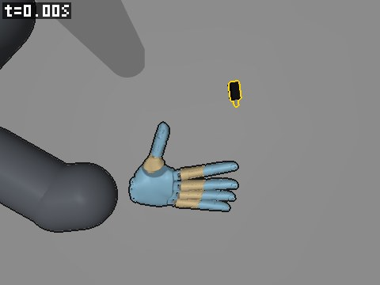

- Run 21 · started · 2.5 h of the 8 h budget
- stage: training
- 26 records · chain verified
- latest result: iteration r0025 · no result
- best full task: no task gate yet (skill and feasibility tests do not count)
- latest note (hypothesis): Controlled set-down from the physical carry endpoint succeeds locally: final x.4031,y-.0757,z-.2925,blades upright, no hand contact…
more
Controlled set-down from the physical carry endpoint succeeds locally: final x.4031,y-.0757,z-.2925,blades upright, no hand contact and32.89s rest, no stop. Combined prefix still fails passive rotation (19.3+4.2+3.4deg). A26-case gradual early-actor transition search found only the original17s handoff valid; free middle-finger support IK misses by23mm, so it cannot supply a useful third contact in this grasp. Next search physically optimizes an8-joint active lift/turn ramp before the actor, scored by the same ordered turn and passive criteria, retaining the established carry/set-down behavior only if the whole frozen CPU rollout passes.
Reconstruction v1 · reference check VALID
The agent's reconstruction of the demonstration next to the demonstration, the 3D viewer, component statuses, validation numbers and limitations.
r0002 · reconstruction v1 the agent's own claim, not an official evaluation
reference check (check_reference.py): VALID · errors 0 · warnings 0 · error_list –
provided reconstruction, registered unchanged
Components
| component | status | method | note |
|---|---|---|---|
| camera | partial | MoGe prior + known-geometry PnP profiles, background rotation and stationary-object camera anchors | Refined camera excludes partial-mask depth hump, max translation2.54cm. Focal regularized1050px; monocular sensitivity retained. |
| objects_6d | partial | Blender geometry, SAM3/SAM2 and physically constrained render-and-compare | Watertight Blender models with white blade holes and correct socket forms; supported and physically airborne object motion, full-scene replayIoU .8774/.8069. Hidden poses invalid;10mm carry clearance inferred, absolute depth uncertain. |
| hand_motion | ok | HaWoR plus mandatory MANO optimizer owned copy, all778 vertices, anatomical opposed contact and geometry-derived separation; independent installed validators | 360valid,handmaskIoU.8514; all10required checks pass; full-surface opposed-contact and support-halfspace refits, extra table check max0.426mm. Baseline and every non-default setting retained. |
| contact_phases | partial | Manual native-frame review, contact-distance validation | Boundary±3–5 frames; hidden contact inference. |
Validation numbers
| schema | recon-validation/1 |
|---|---|
| utc | 2026-11-17T21:53:04Z |
| thresholds | {"contact_band_mm":5.0,"phase_fail_mm":10.0,"pen_warn_mm":5.0,"pen_fail_mm":10.0,"wrist_speed_mps":3.0,"wrist_accel_mps2":150.0,"tip_speed_mps":5.0,"bone_jump_deg":60.0,"obj_jump_m":0.1,"obj_rot_jump_deg":45.0,"g":9.81,"g_tol":2.0,"rest_drift_mm":5.0,"sink_mm":3.0,"hand_chain_mm":[140.0,230.0],"iou_ |
| checks | {"reprojection":{"status":"pass","per_part":null,"below_threshold":null,"note":"against your own masks: agreement with them is necessary, not sufficient (3D errors along the viewing ray are invisible here)"},"fingertip_distance":{"status":"pass","phases":null},"anatomical_contact":{"status":"pass"," |
| summary | {"reprojection":"pass","fingertip_distance":"pass","anatomical_contact":"pass","penetration_hand_object":"pass","self_penetration":"pass","continuity":"pass","physics":"pass","handedness_scale":"pass","sync":"pass","camera_focal":"pass"} |
| failed | – |
| incomplete | – |
| missing_required | – |
| overall | pass |
| overall_note | pass |
Limitations
none recorded
Open the 3D hand–object viewer (the agent's reconstruction data; 4 files)
Rendered by the site's own viewer module from the data the agent uploaded; nothing is synthesised.
recorded 2026-11-18 04:37 EST · version v1 · producer r2s2r-d2s recon
Criteria v1
The agent's own verification criteria, with the reason for each revision.
r0003 · criteria v1
- 7361 characters of criteria text
Criteria text
Plug manipulation verification criteria v1
These are my own simulation verification claims, not an official evaluation. Source: TASK.md and TASK_CONFIG.md; the unchanged reconstruction registered as r0002, especially given/recon/analysis/quantification.json, contacts.json, and video frames 73–211 (white) and 250–384 (black). Deployment has one rigid plug, kind chosen randomly, lying on either broad face or either narrow side at any heading throughout the full configured start rectangle. All criteria apply relative to that plug, irrespective of its heading.
Evidence and decomposition
Observed in the video: approach with palm facing the tabletop; thumb and opposing index/middle grasp the housing, lift, change finger posture while turning the housing blades-up, carry left, lower, release and withdraw. There is no throwing or table-assisted tumbling. Wrist orientation changes as well as finger articulation. Inferred: precise hidden contacts, metric dimensions, airborne depth and exact contact boundaries. The reconstruction estimates contact intervals 2.433–7.033 s and 8.333–12.800 s, with 4.63/4.50 s contact duration; turn intervals 3.667–4.767 s and 10.300–10.867 s. Relative-to-wrist turn is 87.58°/74.33° in those intervals, while wrist turns 27.12°/17.32°. Thumb/index/middle tip excursions are respectively 35.8/53.9/68.3 mm and 28.5/33.5/38.4 mm. Net transport is 205/212 mm. Maximum centre rise is 23.8/33.8 mm, with inferred airborne clearance 10±5 mm. Grasp palm-normal tilt from downward vertical is median 6°/39°; turn 26°/64°; placement 45°/51°. These estimates have correlated monocular uncertainty and contact boundaries ±3–5 frames, not ground-truth precision.
Ordered stages and exact tests
- grasp_lift: an opposed grip (thumb plus at least one of index/middle/ring/pinky, actual MuJoCo contacts) holds the plug clear of the environment for at least 0.5 s total. The centre rises at least 0.015 m above its original supported centre, and palm normal at the first sustained opposed grip faces within 75° of down. Measured demonstration rise 0.024/0.034 m; 15 mm is below these, above contact penetration/noise, and leaves a 5 mm clearance margin for both initial resting faces. Half a second is shorter than the 4.5 s measured contact and long enough to exclude a collision impulse. The tilt permits the observed 6–65° posture range and the specified up-to-60° heading-dependent reach adaptations with 10° model uncertainty. Evaluate first opposed intervals only after t=0, never the ramp.
- finger_turn: after lift, within one continuous opposed grip the object turns at least 55° relative to the palm, at most 20° of accumulated relative rotation occurs while the 20-joint speed norm averaged over 0.1 s is below 0.30 rad/s, and the blade axis reaches within 20° of world up while airborne. Threshold 55° is 74% of the smaller measured 74.33° active turn (allowance for monocular orientation uncertainty and robot morphology); 20° passive allowance is less than 27% of that turn and prevents a static pinch pivot from qualifying. Finger motion must move the opposed contacts during rotation, not merely wiggle an unrelated free finger: the evaluator checks that the contacting thumb and opposing digit each change flexion by at least 0.10 rad during the qualifying interval. The demonstration has 28–68 mm fingertip excursions; 0.10 rad at a 40 mm lever is 4 mm, a conservative physical minimum well above encoder noise. Palm-normal tilt during the qualifying turn remains within 85° of down; the human is 19–65°, with heading-adaptation and morphology allowance. No support contact during the qualifying turn. Exact duration is free because robot actuation is slower than the human.
- carry_left: after the upright turn, carry the held plug toward +y by at least 0.12 m relative to its initial centre, with net horizontal displacement at least 0.15 m; retain it at least 5 mm clear of the support through a continuous 0.25 s carry interval. These are below the measured 0.205/0.212 m transport and reflect the smallest gap from deployment right starts to the left goal. Palm normal stays within 85° of down during this carry; placement palm-normal tilt lies within 10–85° (demonstrated 44–55°, with up to 30° robot adaptation). A recovered dropped plug can complete a new valid sequence. One successful continuous lift/turn/carry sequence must precede the final set-down; table tumbling or rigid wrist-only turning does not count.
- placed: lower under control, release, and satisfy the following unchanged given condition throughout the final 0.5 s. The evaluator uses the actual geometry's standing height (white 20 mm, black 22.5 mm above the table). Standard final-pose/rest predicates independently check its terminal state; the evaluator additionally checks every sample in the last 0.5 s, so a last-sample coincidence cannot pass.
Success condition (given; include it unchanged in your criteria):
- the plug's body centre is in the goal zone, x in [0.28, 0.48] m and y in [-0.10, 0.05] m;
- it stands blades up: its +Z axis is within 10 deg of vertical;
- its centre is at its standing height on the table within +-10 mm;
- it is at rest: linear speed below 0.02 m/s and angular speed below 0.5 rad/s;
- all of this holds over the last 0.5 s of the episode, and the hand does not touch it then.
Reporting and pass rate
Every episode runs the complete 60 s at 30 Hz, including the specified 1.5 s start ramp before t=0; only a canonical hardware stop can end it early. Every ordered stage, hardware_ok, and no stop are required. Standard d2s_measures predicates are: grasp_lift opposed_s>=0.5, held_s>=0.5, max_rise_m>=0.015; finger_turn opposed_rel_rotation_deg>=55 and passive_rel_rotation_deg<=20; carry_left hand_contact_s>=1 and max_rise_m>=0.015; placed final x/y bounds, final_axis_angle_deg<=10, rest_at_end_s>=0.5, touching_hand_at_end=0, touching_environment_at_end=1. The standard rest_at_end measure is stricter than the given speed threshold; retain it as conservative evidence. Stage-specific posture, order, airborne orientation, displacement and exact last-0.5-s goal are checked by the evaluator. Register at least 32 fresh episodes per development gate and 64 for final verification, sampling both kinds, any heading, broad and narrow lying faces. Pass requires >=0.8 success with zero hardware violations and final act() p99<=10 ms, with counts and Wilson intervals reported. Eighty percent is the prescribed mastery floor, not evidence of universal robustness. Feasibility uses identical starts/stages with any controller and >=0.25; teacher data quality target is >=0.9.
Ambiguities and limitations
Exact brands and mass distribution cannot be determined from the demonstration. The supplied geometry and class priors are used unchanged initially; friction, mass, delays and grip will be varied. The robot palm is not the human wrist: align +x to palm normal and +z to finger direction, preserve the object-relative event structure, adapt yaw/tilt to arm reach, and verify the posture bounds above. The video cannot determine exact invisible forces or grasp stability. Simulated contacts and style tests give evidence only in this modeled setting. The final goal condition is authoritative and never relaxed to compensate for simulation or policy failures.
Simulation · 2 versions
The training simulation as recorded by the agent, per version.
r0020 · simulation v2

Changes in this version
- Reason
- r0018 montage seed334062679 shows no held plug by17.70s and the plug still on the table; CPU shooting improved local grasps but not whole-task feasibility. Add an exploratory accelerated privileged contact-teacher…
more
r0018 montage seed334062679 shows no held plug by17.70s and the plug still on the table; CPU shooting improved local grasps but not whole-task feasibility. Add an exploratory accelerated privileged contact-teacher training backend. Frozen CPU evaluation and criteria remain unchanged.
Recorded fields
- Reconstruction version
- 1
- Simulator
- name
- MuJoCo CPU
- version
- 3.17.0
- physics_dt_s
- 0.002
- controller_hz
- 100
- policy_hz
- 30
- integrator
- implicitfast
- solver
- Newton, elliptic cones, 80 iterations, ls30, tolerance1e-8
- contact
- convex mesh per reconstructed part, 64-vertex hull cap for hand, solref .005 1, hand/object condim4
- Reference
- record
- r0002
- uses
- event order, metric object shapes, phase wrist/relative-object rotations and contact understanding; no human finger-to-robot retargeting. Diagnostic wrist axes +x palm normal/+z fingers, calibrated translation offset.…
more
event order, metric object shapes, phase wrist/relative-object rotations and contact understanding; no human finger-to-robot retargeting. Diagnostic wrist axes +x palm normal/+z fingers, calibrated translation offset. Teacher solves physical contacts. - diagnostic
JSON (8 keys)
{"source":"r0002 given/recon, white frames37:211","kind":"kinematic diagnostic, object motion imposed, no feasibility claim","T_wrist_palm":[null,null,null,null],"robot_demo_translation":[0.22828183834187354,-0.29408058687916905,-0.02414381800714427],"position_residual_m_median_max":[3.215107810336445e-05,0.0609518178907877],"orientation_residual_deg_median_max":[0.009275519478450098,31.86458611896726],"deepest_[redacted]_m":0.0764656060943819,"interpretation":"Naive human wrist retargeting has reach/contact errors. Source is an event and relative-motion reference; the teacher must solve robot-specific contacts."}
- Initial conditions
- start_pose
JSON (3 keys)
{"palm_position":[0.2002528511837732,-0.49974415846474723,-0.049719255651681116],"palm_orientation":[0.6718853983831022,0.14955421662090648,0.69135388711002,0.21962092456856783],"hand_q":[0.1,0.0,0.0,0.0,0.0,0.0,0.0,0.0,0.0,0.0,0.0,0.0,0.0,0.0,0.0,0.0,0.0,0.0,0.0,0.0]}- ramp
- constant start palm equals FK(reset), fingers at open mechanical minimum thumb .1; full1.5s ramp still simulated, objects settle; no teleport evaluation
- sampler
- seed-deterministic kind0/1 equal, x/y uniform entire deployment rectangle, heading uniform[-pi,pi), four resting face orientations, narrow faces probability.25
- Episode
- duration_s
- 60
- terminations
- canonical target_jump, torque_halt, arm_collision, arm_collision_left, policy_failure; full60s otherwise; dropped object not a termination
- Validation
- fk_home_error_m
- 3.56343e-05
- supported_starts
- 64/64
- hold_stops
- 0
- contract_local
- saved nominal and randomized hold episodes pass default sensor replay, FK, measured-state range, targets, rates and lengths in d2s_measures contract CLI
- reference_replay
- diagnostic fails contact/reach fidelity: worst61mm palm error,31.9deg orientation error and76.5mm imposed-pose penetration. It is not an executable teacher or a success claim.
- physical_teacher_so_far
- exploratory contact teacher lifted seed0 by25.6mm in opposed grip0.85s, then passively pivoted/dropped; no task feasibility yet. Torque stops were observed on unsafe descending contacts.
- gpu_cpu_hold_diagnostic
JSON (10 keys)
{"scope":"one-second holding from128 seeded small perturbations of a physically obtained grasp; not full deployment task parity","snapshot":5,"episodes":128,"cpu_held_mean":0.92109375,"gpu_held_mean":0.8252604007720947,"position_difference_m_median_p95":[0.0003497553942030609,0.06229898482377226],"orientation_difference_deg_median_p95":[0.7629430275862129,31.38240953577403],"cpu_stops":0,"gpu_stops":0,"wall_s":9.110642762003408}
- Limitations
list (7 items)
Arm inertias absent/zero in vendor file are regularized isotropic max(.0005,mass*.002)kgm²; provided masses and COM retained. Added arm dynamics may differ from fitted station joint response., IK damping/step/barrier strength are implementation assumptions; the station public specification does not identify exact numeric solver internals., Object sizes fixed at nominal reconstructed dimensions. COM, mass, friction randomized; exact glove patch/torsion unmeasured. Left hand is a conservative box proxy., Visibility uses mesh-derived capsules, not rendered occlusion; pose sensor stochastic model is exact given these visibility inputs. Finger self contact uses smaller phalange cores and can miss skin/hull overlap; palm/finger self contacts excluded. No claim of full self-collision fidelity., No successful physical active turn/placement established at this record. Kinematic reference replay visibly fails and is explicitly not used as performance evidence., GPU one-second holding parity has large contact-loss tails: p95 difference62.3mm/31.38deg, CPU opposed fraction.921 versus GPU.825. This is NOT passing task parity. GPU learning metrics cannot substantiate feasibility or mastery. Every kept teacher/student must pass the unchanged CPU suite., GPU sensor is omitted for privileged teacher primitive exploration; the final student and all suite rollouts retain the recorded sensor model. No full-task GPU validation yet.- arm
- control
- 30Hz targets held to100Hz, raw jump>.1m/.5rad halt; tick clamp .02m/.075rad and workspace box; weighted8iteration DLS IK, home nullspace pull, rectangular-column repulsion, IK joint limits and pi rad/s target rate; seed…
more
30Hz targets held to100Hz, raw jump>.1m/.5rad halt; tick clamp .02m/.075rad and workspace box; weighted8iteration DLS IK, home nullspace pull, rectangular-column repulsion, IK joint limits and pi rad/s target rate; seed measured arm joints every tick - response
- published per-joint100–140ms delays and0–40ms first-order lags; articulated joint impedance K,D published, implicit damping, target-velocity and gravity compensation; tau_ext from physical qfrc_constraint[:7],…
more
published per-joint100–140ms delays and0–40ms first-order lags; articulated joint impedance K,D published, implicit damping, target-velocity and gravity compensation; tau_ext from physical qfrc_constraint[:7], instantaneous20Nm halt - collision
- physical conservative arm capsules with table/object stop; parked-left contacts stop; hand/table contact alone continues
- hand
- control
- held100Hz, first-order2Hz low-pass,25ms delay nominal (measured-response stiffness30*vendor kp,sqrt30*kv), torque capped by episode grip*published effort
- limits
- exact deployed limits; mechanical-stop solref .004s instead of MuJoCo default .020s, solimp .95 .999 .001 .5 2, chosen to keep force-limited deviations within physical20mrad allowance; violations still reported
- contact
- Inter-finger self contact uses6.5/7.5mm-radius phalange cores; full vendor convex hulls overlap at open pose and cannot be used directly for self collision. Same-finger and palm/finger self contacts excluded. Object…
more
Inter-finger self contact uses6.5/7.5mm-radius phalange cores; full vendor convex hulls overlap at open pose and cannot be used directly for self collision. Same-finger and palm/finger self contacts excluded. Object contacts retain the full supplied hulls. Condim4 torsional friction coefficient .005m models finite soft glove/pad patch; not measured, sensitivity remains a limitation. No grasp welds or object pose injection in policy rollouts.
- sensor
- model
- unaltered d2s_sensor default SensorParams, one PoseSensor per episode, fresh sensor seed read from gate stdin; object updates at every state-log row (100Hz plus policy boundaries)
- visibility
- harness visible_fraction, 64 sampled points/normals on reconstructed object mesh; occluders fitted collision-mesh hand capsules and exact public arm capsules; 90th-percentile hand capsule radii approximate silhouette
- proprioception
- sampled100Hz joint histories, lognormal13.9ms median/21.1ms p95 state age,0.1deg finger encoder noise; palm FK exactly from observed arm_q
- domain_randomization
distribution quantity uniform[.25,1] grip scale uniform[.020,.035]s hand delay uniform[1.5,2.5]Hz hand filter uniform[-.015,.015]s per joint arm delay jitter uniform[.8,1.25] per joint arm lag multiplier uniform[.6,1.2] hand sliding friction uniform[.3,.8] object sliding friction uniform[.75,1.25] mass multiplier uniform[-.003,.003]m each axis COM jitter ranges above table edges - physical_priors
- source_files
- given/recon/physics/*.json and analysis/object_sources.json, registered unchanged
- checked_urls
list (2 items)
https://www.chargerlab.com/review-of-new-apple-20w-charger-for-iphone-15-a2940/, https://www.interpower.com/docs/connections_2_6-04.pdf- white
- uncertain Apple18/20W-like body27x41.5x40mm,58.5g prior from direct caliper/scale publication; black22x30x45mm45g inferred, not identified; blade16mm protrusion and TypeA dimensions from source reconstruction
- teacher_training_backend
- name
- MuJoCo Warp
- version
- 3.17.0
- warp_version
- 1.19.0
- source_files_sha256
JSON (4 keys)
{"research/teacher_rl/gpu_env.py":"55d969b3e106…","research/teacher_rl/arm_port.py":"0c8fb3ab4c67…","research/teacher_rl/train.py":"c6dceef1722a…","research/teacher_rl/cpu_teacher.py":"43ef41fe363d…"}- scene
- same recorded full articulated CPU model loaded from physically executed grasp snapshots; no task-reset substitution
- controller
- same100Hz IK, clamps, published delays/lag, impedance, hand filter/delay/torque caps, mechanical limits, arm contact and torque stops
- timing_difference
- 100Hz ticks grouped3,3,4 per30Hz action; CPU uses exact1/30s partial-step boundaries
- observations
- privileged true physical state/contact/goal and controller state for teacher only; final student will use contract-v3 sensor observations
- training_resets
- local seeds5 black and6 white held snapshots from genuine full physical reset/ramp/action prefixes, for teacher primitive diagnostics only; full60s CPU suite always starts at deployment resets
- goal
- curriculum hold then15deg steps to90deg, orientation target minimal rotation toward blades up; active finger motion, opposed contact and passive-rotation penalty; teacher can move palm bounded25deg relative to grasp
- randomization
- initial experimental training nominal per-snapshot physics, stochastic policy actions; not robustness evidence
- gate_evidence
- gate
- r0018
- seen
- r0018: viewed seed334062679 montage; by17.70s the closed fingers withdraw and the plug remains table-supported. Add accelerated privileged contact-teacher exploration; CPU task physics, criteria and evaluation remain…
more
r0018: viewed seed334062679 montage; by17.70s the closed fingers withdraw and the plug remains table-supported. Add accelerated privileged contact-teacher exploration; CPU task physics, criteria and evaluation remain frozen. GPU holding parity has failing tails and supplies no task-success claim.
r0008 · simulation v1

Changes in this version
First simulation version.
Recorded fields
- Reconstruction version
- 1
- Simulator
- name
- MuJoCo CPU
- version
- 3.17.0
- physics_dt_s
- 0.002
- controller_hz
- 100
- policy_hz
- 30
- integrator
- implicitfast
- solver
- Newton, elliptic cones, 80 iterations, ls30, tolerance1e-8
- contact
- convex mesh per reconstructed part, 64-vertex hull cap for hand, solref .005 1, hand/object condim4
- Reference
- record
- r0002
- uses
- event order, metric object shapes, phase wrist/relative-object rotations and contact understanding; no human finger-to-robot retargeting. Diagnostic wrist axes +x palm normal/+z fingers, calibrated translation offset.…
more
event order, metric object shapes, phase wrist/relative-object rotations and contact understanding; no human finger-to-robot retargeting. Diagnostic wrist axes +x palm normal/+z fingers, calibrated translation offset. Teacher solves physical contacts. - diagnostic
JSON (8 keys)
{"source":"r0002 given/recon, white frames37:211","kind":"kinematic diagnostic, object motion imposed, no feasibility claim","T_wrist_palm":[null,null,null,null],"robot_demo_translation":[0.22828183834187354,-0.29408058687916905,-0.02414381800714427],"position_residual_m_median_max":[3.215107810336445e-05,0.0609518178907877],"orientation_residual_deg_median_max":[0.009275519478450098,31.86458611896726],"deepest_[redacted]_m":0.0764656060943819,"interpretation":"Naive human wrist retargeting has reach/contact errors. Source is an event and relative-motion reference; the teacher must solve robot-specific contacts."}
- Initial conditions
- start_pose
JSON (3 keys)
{"palm_position":[0.2002528511837732,-0.49974415846474723,-0.049719255651681116],"palm_orientation":[0.6718853983831022,0.14955421662090648,0.69135388711002,0.21962092456856783],"hand_q":[0.1,0.0,0.0,0.0,0.0,0.0,0.0,0.0,0.0,0.0,0.0,0.0,0.0,0.0,0.0,0.0,0.0,0.0,0.0,0.0]}- ramp
- constant start palm equals FK(reset), fingers at open mechanical minimum thumb .1; full1.5s ramp still simulated, objects settle; no teleport evaluation
- sampler
- seed-deterministic kind0/1 equal, x/y uniform entire deployment rectangle, heading uniform[-pi,pi), four resting face orientations, narrow faces probability.25
- Episode
- duration_s
- 60
- terminations
- canonical target_jump, torque_halt, arm_collision, arm_collision_left, policy_failure; full60s otherwise; dropped object not a termination
- Validation
- fk_home_error_m
- 3.56343e-05
- supported_starts
- 64/64
- hold_stops
- 0
- contract_local
- saved nominal and randomized hold episodes pass default sensor replay, FK, measured-state range, targets, rates and lengths in d2s_measures contract CLI
- reference_replay
- diagnostic fails contact/reach fidelity: worst61mm palm error,31.9deg orientation error and76.5mm imposed-pose penetration. It is not an executable teacher or a success claim.
- physical_teacher_so_far
- exploratory contact teacher lifted seed0 by25.6mm in opposed grip0.85s, then passively pivoted/dropped; no task feasibility yet. Torque stops were observed on unsafe descending contacts.
- Limitations
list (5 items)
Arm inertias absent/zero in vendor file are regularized isotropic max(.0005,mass*.002)kgm²; provided masses and COM retained. Added arm dynamics may differ from fitted station joint response., IK damping/step/barrier strength are implementation assumptions; the station public specification does not identify exact numeric solver internals., Object sizes fixed at nominal reconstructed dimensions. COM, mass, friction randomized; exact glove patch/torsion unmeasured. Left hand is a conservative box proxy., Visibility uses mesh-derived capsules, not rendered occlusion; pose sensor stochastic model is exact given these visibility inputs. Finger self contact uses smaller phalange cores and can miss skin/hull overlap; palm/finger self contacts excluded. No claim of full self-collision fidelity., No successful physical active turn/placement established at this record. Kinematic reference replay visibly fails and is explicitly not used as performance evidence.- arm
- control
- 30Hz targets held to100Hz, raw jump>.1m/.5rad halt; tick clamp .02m/.075rad and workspace box; weighted8iteration DLS IK, home nullspace pull, rectangular-column repulsion, IK joint limits and pi rad/s target rate; seed…
more
30Hz targets held to100Hz, raw jump>.1m/.5rad halt; tick clamp .02m/.075rad and workspace box; weighted8iteration DLS IK, home nullspace pull, rectangular-column repulsion, IK joint limits and pi rad/s target rate; seed measured arm joints every tick - response
- published per-joint100–140ms delays and0–40ms first-order lags; articulated joint impedance K,D published, implicit damping, target-velocity and gravity compensation; tau_ext from physical qfrc_constraint[:7],…
more
published per-joint100–140ms delays and0–40ms first-order lags; articulated joint impedance K,D published, implicit damping, target-velocity and gravity compensation; tau_ext from physical qfrc_constraint[:7], instantaneous20Nm halt - collision
- physical conservative arm capsules with table/object stop; parked-left contacts stop; hand/table contact alone continues
- hand
- control
- held100Hz, first-order2Hz low-pass,25ms delay nominal (measured-response stiffness30*vendor kp,sqrt30*kv), torque capped by episode grip*published effort
- limits
- exact deployed limits; mechanical-stop solref .004s instead of MuJoCo default .020s, solimp .95 .999 .001 .5 2, chosen to keep force-limited deviations within physical20mrad allowance; violations still reported
- contact
- Inter-finger self contact uses6.5/7.5mm-radius phalange cores; full vendor convex hulls overlap at open pose and cannot be used directly for self collision. Same-finger and palm/finger self contacts excluded. Object…
more
Inter-finger self contact uses6.5/7.5mm-radius phalange cores; full vendor convex hulls overlap at open pose and cannot be used directly for self collision. Same-finger and palm/finger self contacts excluded. Object contacts retain the full supplied hulls. Condim4 torsional friction coefficient .005m models finite soft glove/pad patch; not measured, sensitivity remains a limitation. No grasp welds or object pose injection in policy rollouts.
- sensor
- model
- unaltered d2s_sensor default SensorParams, one PoseSensor per episode, fresh sensor seed read from gate stdin; object updates at every state-log row (100Hz plus policy boundaries)
- visibility
- harness visible_fraction, 64 sampled points/normals on reconstructed object mesh; occluders fitted collision-mesh hand capsules and exact public arm capsules; 90th-percentile hand capsule radii approximate silhouette
- proprioception
- sampled100Hz joint histories, lognormal13.9ms median/21.1ms p95 state age,0.1deg finger encoder noise; palm FK exactly from observed arm_q
- domain_randomization
distribution quantity uniform[.25,1] grip scale uniform[.020,.035]s hand delay uniform[1.5,2.5]Hz hand filter uniform[-.015,.015]s per joint arm delay jitter uniform[.8,1.25] per joint arm lag multiplier uniform[.6,1.2] hand sliding friction uniform[.3,.8] object sliding friction uniform[.75,1.25] mass multiplier uniform[-.003,.003]m each axis COM jitter ranges above table edges - physical_priors
- source_files
- given/recon/physics/*.json and analysis/object_sources.json, registered unchanged
- checked_urls
list (2 items)
https://www.chargerlab.com/review-of-new-apple-20w-charger-for-iphone-15-a2940/, https://www.interpower.com/docs/connections_2_6-04.pdf- white
- uncertain Apple18/20W-like body27x41.5x40mm,58.5g prior from direct caliper/scale publication; black22x30x45mm45g inferred, not identified; blade16mm protrusion and TypeA dimensions from source reconstruction
Iterations · 2
Each evaluated training iteration; the latest is expanded.
Policy with privileged information (2) · the policy observes more than proprioception and object states (for example a teacher)
r0025sim v2privileged informationno resultGeometric fit and stable lift do not establish full skill. Contact placement dictates available turn range. Ea
iteration v2 · the agent's own claim, not an official evaluation
Training curves
Reward terms
none recorded
Domain randomization
none recorded
Curriculum
full physical reset/ramp/approach, grasp then held-state isolated turn; isolated starts never counted as task evaluations
Algorithm
CPU physical CEM for grasp/turn/retention/carry plus supervised initialization of privileged teacher actors from partial physical MPC rollouts; not final student BC
Policy and training
- Observations
- 138 true physical pose, q/velocity, contacts and control-state features; no final-policy claim
Evaluation vs the agent's criteria
episodes – · successes – · success rate –
- gate_current
- r0018 unchanged0/32,1hardware violation
- local_nominal_black5
- full physical prefix with handoff17s meets grasp and turn at20.4s:67.9deg relative,19.3deg passive,blade19.97deg,palm70.73deg; continued actor fails bypassive31.1deg
- local_hold
- opposed4s,blade4.59deg but16.4deg further passive motion, therefore cannot preserve whole style criterion
- local_carry
- opposed4.74s, y=-.126 then drops;32.8deg passive; no placement
- supervised_initial_actor
- black held-state59.6deg relative/78.4degworld then drops; white42.3deg then drops
- whole_task_successes
- 0
Compute
- cpu_shooting_and_actor_initialization_only
- yes
- partial_MPC_training_samples_black
- 294
- partial_MPC_training_samples_white
- 187
- RL_jobs_not_yet_evaluated
- yes
Reflection
Geometric fit and stable lift do not establish full skill. Contact placement dictates available turn range. Early NN handoff avoids passive lift pivot and can pass active-turn stage, but an explicit stable transition… more
Other recorded fields (5)
- stage
- teacher
- parent
- r0012 / teacher_v1 r0018
- network
- privileged actor256ELU256ELU26tanh,critic same; actor trained500epochs on294 black/187 white state-action pairs; two partial local states, not deployment data
- action
- 26 deltas, palm4mm/.04rad and20finger.06rad per30Hz step; wrist bounded25deg for initialized actor
- budget
- first geometric90min exhausted, privileged PPO branches now running fixed300updates each; no RL results claimed in this record
r0012sim v1privileged informationno resultStatic geometric fits do not imply dynamic feasibility. Grasp fails in18/32 and turn in all14 remaining. No fu
iteration v1 · the agent's own claim, not an official evaluation
Training curves
Reward terms
none recorded
Domain randomization
| quantity | distribution |
|---|---|
| grip scale | uniform[.25,1] |
| hand delay | uniform[.020,.035]s |
| hand filter | uniform[1.5,2.5]Hz |
| arm delay jitter | uniform[-.015,.015]s per joint |
| arm lag multiplier | uniform[.8,1.25] per joint |
| hand sliding friction | uniform[.6,1.2] |
| object sliding friction | uniform[.3,.8] |
| mass multiplier | uniform[.75,1.25] |
| COM jitter | uniform[-.003,.003]m each axis |
| table edges | ranges above |
Curriculum
none
Algorithm
privileged coupled arm/finger contact IK, deterministic slow task trajectory; no reinforcement learning
Policy and training
- Observations
- contract plus true object/palm/contact state
Evaluation vs the agent's criteria
episodes 32 · successes – · success rate –
- gate
- r0011
- grasp_lift
- 14
- finger_turn
- 0
- carry_left
- 0
- placed
- 0
- success
- 0
- hardware_violations
- 2
- reproducible
- yes
Compute
- environment_steps_local
- 3600
- cpu_only
- yes
Reflection
Static geometric fits do not imply dynamic feasibility. Grasp fails in18/32 and turn in all14 remaining. No full success; next changes target physical grasp retention and the transition into active turn. Gate renderer… more
Other recorded fields (6)
- stage
- teacher
- network
- none (teacher only)
- action
- contract-v3 palm pose and20 finger targets at30Hz
- seeds
- local0,5 plus gate fresh32
- training_budget
- 90min geometric teacher approach, then reassess; desired full teacher>=.9 before distillation
- package
- research/packages/teacher_v1
Deployable policy (no privileged information) (0) · the policy observes only proprioception and object states
Gates · 2 (2 accepted, 0 rejected) · no final gate
Every change the agent kept or dropped went through the gate: the agent's own evaluation, frozen and run by the harness on fixed starts, compared with the best policy so far. Accepted means the predicted stage improved without other stages getting worse.
plug_task v1 · task suite · start check passed 64/64 · stages grasp_lift → finger_turn → carry_left → placed · pass rate 0.8 · 32 dev starts — One plug of either kind, full deployment starts; opposed lift, active finger turn, carry left, released upright stable placement. Sensor defaults and complete station controller.
plug_feasibility v1 · feasibility suite · stages grasp_lift → finger_turn → carry_left → placed · pass rate 0.25 · 32 dev starts — One plug of either kind, full deployment starts; opposed lift, active finger turn, carry left, released upright stable placement. Sensor defaults and complete station controller.
plug_task v2 · task suite · start check passed 64/64 · stages grasp_lift → finger_turn → carry_left → placed · pass rate 0.8 · 32 dev starts — One plug of either kind, full deployment starts; opposed lift, active finger turn, carry left, released upright stable placement. Sensor defaults and complete station controller.
plug_feasibility v2 · feasibility suite · stages grasp_lift → finger_turn → carry_left → placed · pass rate 0.25 · 32 dev starts — One plug of either kind, full deployment starts; opposed lift, active finger turn, carry left, released upright stable placement. Sensor defaults and complete station controller.
| Gate | Time | Suite | Decision | Predicted change | Success | Method | Hypothesis |
|---|---|---|---|---|---|---|---|
| r0018 | plug_feasibility v2 | baseline | success | 0/32 | teacher: coupled contact IK baseline | Repeat the geometric teacher baseline with the repaired review job on unchanged physics and criteria. first failed stage: grasp_lift 16 · finger_turn 16 observed: r0011 regenerated seed1926376050: at12-14s the digits touch the tabletop-supported plug, but at16s no finger remains in contact and the plug stays at z=-304mm. Grasp retention is the first failure. | |
| r0011 | plug_feasibility v1 | baseline | grasp_lift | 0/32 | teacher: coupled contact IK and slow app | Coupled contact IK forms and lifts opposed grasps on some deployment starts; active turn and placement remain unproven. first failed stage: grasp_lift 18 · finger_turn 14 observed: First baseline: local seed 0 lifts 45.2 mm and holds in opposition 2.6 s, then slips; seed 5 stays on the table. Neither has full task success. |


Verification · not yet
Verification results recorded by the agent — the agent's own claim, not an official evaluation.
Policy with privileged information (0) · the policy observes more than proprioception and object states (for example a teacher)
Deployable policy (no privileged information) (0) · the policy observes only proprioception and object states
Notes · 14
Hypotheses, decisions, reflections and blockers.
more
more
more
more
more
more
more
more
more
more
more
more
more
more
Timeline · 26 records
Every record in the order received; a simulation, iteration or verification before the first reconstruction is marked out of order.